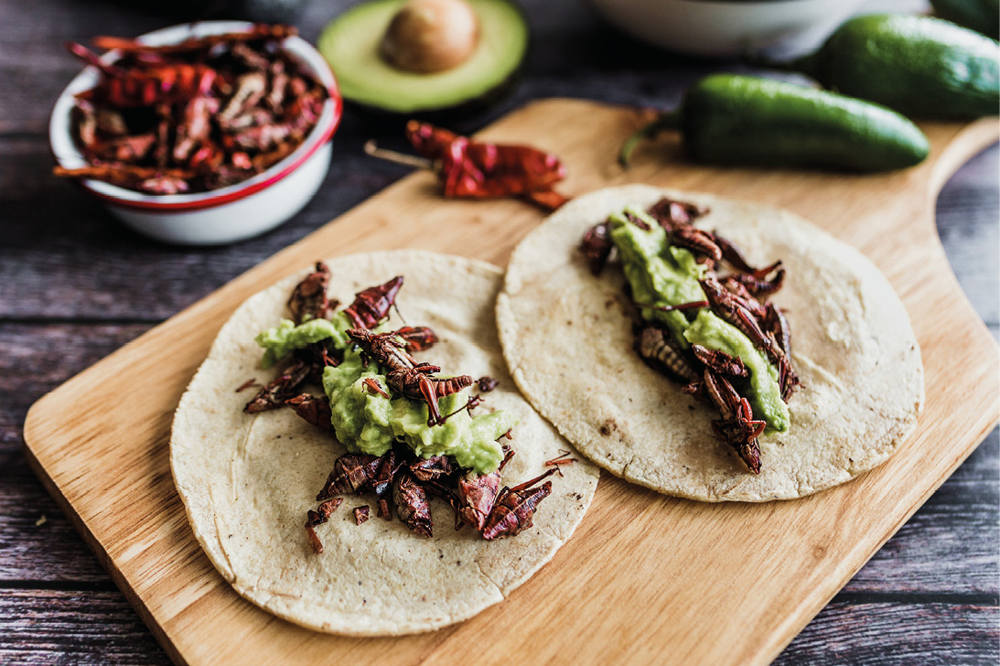

Tlayudas
Conocidas como la "pizza oaxaqueña", son tortillas grandes y crujientes rellenas de frijoles, quesillo, carne y salsas tradicionales.

Mole Oaxaqueño
El mole es uno de los platillos más emblemáticos de Oaxaca, con más de 7 variedades como el mole negro, colorado y amarillo.

Chapulines
Los chapulines son insectos comestibles que se sirven tostados con limón, ajo y sal. Son un snack crujiente y lleno de sabor.
